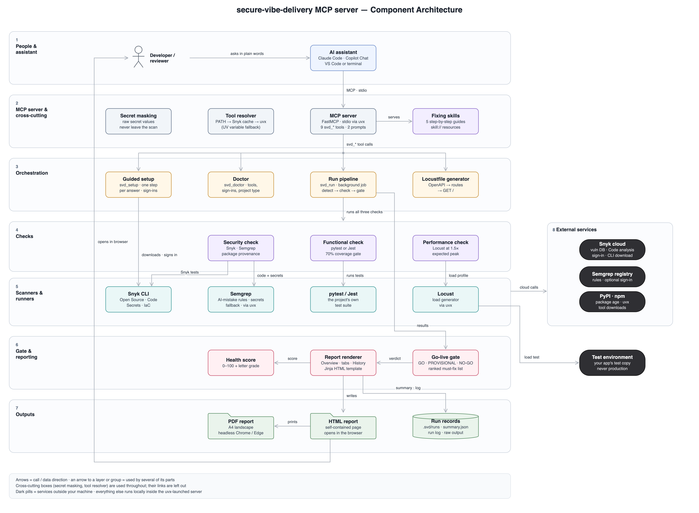
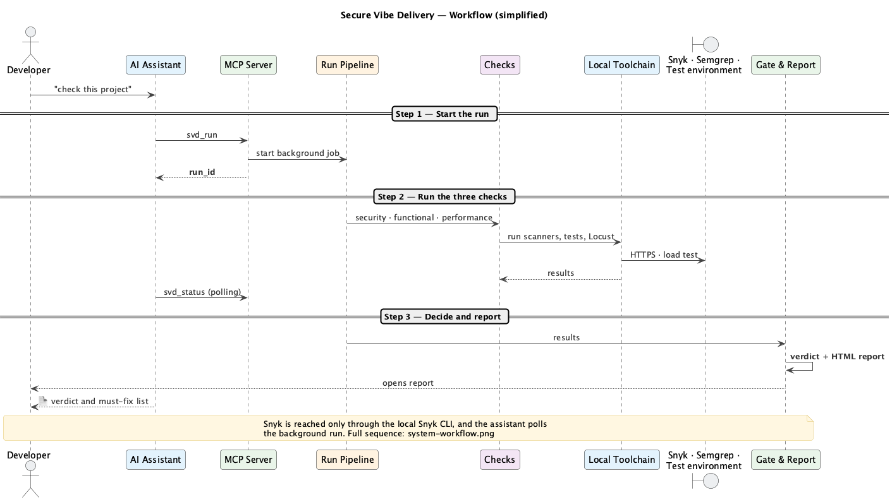

Every component of the server in seven layers, from the developer and their assistant down to the reports, with the external services on the right.
Open full size ↗
One go-live check as a sequence: start the run, run the three checks, then decide and report. The assistant polls the background run.
Open full size ↗
The primary path across twelve core components, with the local boundary and the outside services. Hover, zoom and switch themes inside the view.
Open on its own ↗Press Play to watch one request travel through every component in 28 steps. Click any card or link to inspect it.
Open on its own ↗